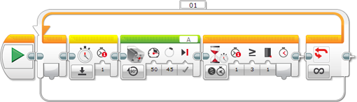
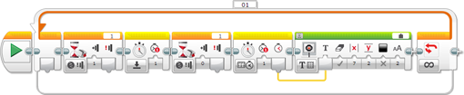

					<table cellpadding="0" cellspacing="0" border="0"><tbody><tr><td>
	
						<h1>使用计时器<a name="top"></a></h1>
		<div id="block_1332" class="block blockHeader">
				<div class="description">计时器可以用于测量时间间隔。计时器的用法类似于传感器，但是它位于 EV3 程序块内部，无需传感器端口。例如，可以使用计时器测量机器人移动特定距离所需的时间量。 <br>
<br>
EV3 具有八个计时器，因此可以一起对多达八个不同事件进行计时。可以在程序中的任何位置将计时器重置为零，它会从该处开始计时。</div>
			</div>
	<div id="block_769" class="block blockTip">
		<div class="title">提示和技巧</div>
		<div class="boxContent">
			<div class="description">如果只是希望在程序中等待特定时间量，则可以使用“等待时间”模式的<a href="./index.html?id=Wait">等待</a>模块。使用计时器可以在程序中的不同位置重置计时器和测试计时器。</div>
				</div>
	</div>
	<div id="block_771" class="block blockChaptor">
		<div class="title"><a name="TimerData" style="position:relative; top:-10px;"></a>计时器数据</div>
		<div class="description">计时器提供以下数据：</div>
	</div>
	<div id="block_772" class="block blockTable ">
		<table class="blockTable">
		

			<tbody><tr>
<th>数据</th><th>类型</th><th>备注</th>			</tr>
<tr><td>经过时间 <a name="ElapsedTime" style="position:relative; top:-10px;"></a></td><td>数字</td><td>自计时器上次重置以来经过的时间（以秒为单位）。</td></tr>		</tbody></table>
	</div>
	<div id="block_773" class="block blockTip">
		<div class="title">提示和技巧</div>
		<div class="boxContent">
			<div class="description">提示：使用小数、以秒为单位测量时间。十分之一秒的间隔会形成 0.1 秒的经过时间。</div>
				</div>
	</div>
	<div id="block_775" class="block blockChaptor">
		<div class="title"><a name="ResettingATimer" style="position:relative; top:-10px;"></a>重置计时器</div>
		<div class="description">可以使用“重置”模式的<a href="./index.html?id=Timer">计时器</a>模块，在程序中的任何位置将计时器重置为零（0.0 秒）。在计时器重置之后，它会立即从零再次开始计时。所有八个计时器都会在程序开始时自动重置，并始终运行。</div>
	</div>
	<div id="block_776" class="block blockTip">
		<div class="title">提示和技巧</div>
		<div class="boxContent">
			<div class="description">如果测量从未重置的计时器，则会获得自程序开始以来的经过时间。</div>
				</div>
	</div>
	<div id="block_778" class="block blockChaptor">
		<div class="title"><a name="ExamplesUsingTheTimer" style="position:relative; top:-10px;"></a>计时器使用示例</div>
		<div class="description">下面演示了有关在程序中如何使用计时器的示例。</div>
	</div>
	<div id="block_779" class="block blockExample">
		<div class="title">示例 1：每秒使电机移动一次</div>
		<div class="image"></div>
		<div class="description">此程序每秒使电机精确转动 45 度一次，如同嘀嗒作响的时钟一样。此程序使用<a href="./index.html?id=MediumMotor">中型电机</a>模块使电机转动 45 度，这会需要一点时间，但是少于 1 秒。随后此程序需要等待 1 秒间隔的剩余时间结束，然后再次移动电机。为此，此程序会使用“重置”模式的<a href="./index.html?id=Timer">计时器</a>模块在启动电机之前启动计时器 1。随后在电机停止之后，“计时器 － 比较 － 时间”模式的<a href="./index.html?id=Wait">等待</a>模块会等待计时器 1 达到 1 秒。这会形成总间隔 1 秒，包括电机移动时间和停止时间。</div>
	</div>
	<div id="block_780" class="block blockExample">
		<div class="title">示例 2：测量按入触动传感器的时间长度</div>
		<div class="image"></div>
		<div class="description">此程序测量每次按压触动传感器时按入的时间长度，以秒为单位的结果显示在 EV3 显示屏上。此程序使用<a href="./index.html?id=Wait">等待</a>模块等待触动传感器按压，然后再次等待松开。在按压之后，使用“重置”模式的<a href="./index.html?id=Timer">计时器</a>模块重置计时器 1。在松开之后，使用“测量 － 时间”模式的<a href="./index.html?id=Timer">计时器</a>模块测量计时器 1 的经过时间。生成的数字会连线到<a href="./index.html?id=Display">显示</a>模块以便以秒为单位显示该数字。</div>
	</div>
	<div id="block_781" class="block blockChaptor">
		<div class="title"><a name="TimerBlocksAndModes" style="position:relative; top:-10px;"></a>计时器模块和模式</div>
		<div class="description">下表显示可以与计时器一起使用的所有编程模块和模式。</div>
	</div>
	<div id="block_782" class="block blockTable ">
		<table class="blockTable">
		

			<tbody><tr>
<th>模块</th><th>模式</th><th>用途</th>			</tr>
<tr><td><a href="./index.html?id=Wait">等待</a> <a name="Mode_WaitTimerCompareTime" style="position:relative; top:-10px;"></a></td><td>计时器 － 比较 － 时间</td><td>等待计时器达到特定值。</td></tr><tr><td><a href="./index.html?id=Wait">等待</a></td><td>计时器 － 更改 － 时间</td><td>等待计时器按特定量更改。</td></tr><tr><td><a href="./index.html?id=LoopCondition">循环</a> <a name="Mode_LoopTimerCompareTime" style="position:relative; top:-10px;"></a></td><td>计时器</td><td>重复模块序列，直至计时器达到特定值。</td></tr><tr><td><a href="./index.html?id=CaseSelector">切换</a> <a name="Mode_SwitchTimerCompareTime" style="position:relative; top:-10px;"></a></td><td>计时器</td><td>根据计时器在两个模块序列之间进行选择。</td></tr><tr><td><a href="./index.html?id=Timer">计时器</a></td><td>测量</td><td>读取计时器，并通过数字数据线获取以秒为单位的结果。</td></tr><tr><td><a href="./index.html?id=Timer">计时器</a></td><td>比较</td><td>将计时器与阈值进行比较，并通过逻辑数据线获取结果。</td></tr><tr><td><a href="./index.html?id=Timer">计时器</a></td><td>重置</td><td>将计时器重置为零。计时器会立即再次开始计时。</td></tr>		</tbody></table>
	</div>
	<div id="block_783" class="block blockTip">
		<div class="title">提示和技巧</div>
		<div class="boxContent">
			<div class="description">计时器的简单用法还可能能够使用以下模块和模式：</div>
				</div>
	</div>
	<div id="block_785" class="block blockTable ">
		<table class="blockTable">
		

			<tbody><tr>
<th>模块</th><th>模式</th><th>用途</th>			</tr>
<tr><td><a href="./index.html?id=Wait">等待</a></td><td>时间</td><td>等待特定时间量。</td></tr><tr><td><a href="./index.html?id=LoopCondition">循环</a></td><td>时间</td><td>在特定时间量内重复模块序列。</td></tr>		</tbody></table>
	</div>
	
			<div id="quick">
				<div class="header"><a href="./index.html?id=UsingSensors_Timer#header">计时器</a></div>
					<div class="quickText">快速链接</div>
					
					<ul>
	<li><a href="./index.html?id=UsingSensors_Timer#TimerData">计时器数据</a></li><li><a href="./index.html?id=UsingSensors_Timer#ResettingATimer">重置计时器</a></li><li><a href="./index.html?id=UsingSensors_Timer#ExamplesUsingTheTimer">计时器使用示例</a></li><li><a href="./index.html?id=UsingSensors_Timer#TimerBlocksAndModes">计时器模块和模式</a></li>					</ul>
			</div>
	
	</td></tr></tbody></table>